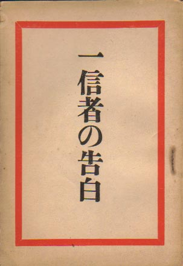
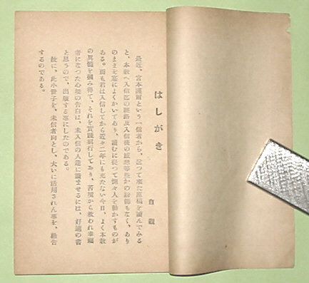

――― 岡
田 自 観 師 の 論 文 集 ――発行誌別
一信者の告白
 |
一信者の告白 昭和26年 6月15日発行 Ａ６版 53P 非売品 著者 宮本謹爾 発行者 小山正男 発行所 世界救世教出版部 |
||
|
|||
 |
はしがき 自観 最近、宮本謹爾という一信者から、送って来た原稿〔略〕を読んでみると、本教へ入信までの経路及び入信後の感想等いささかの粉飾もなく、ありのままをまことによくかいてあり、読むに従って惻々（そくそく）人を動かすものがある。しかも君は入信してから近々二年にも充たない今日、よく本教の真髄を掴み得て、それを実践躬行（きゅうこう）しており、苦境から救われ幸福者になった心境の告白は、未入信の人達に読ませるには、好適の書と思うので、出版する事にしたのである。 ゆえに、この小冊子を、未信者向とし、大いに活用されん事を、勧告するのである。 |
||